À propos de moi
Actuellement en BTS SIO, je me passionne pour l'informatique et les jeux vidéos.
Développement
Python / Python (odoo), C#, HTML/CSS, XML (odoo), PHP, vue.js
Bases de données
Modélisation, gestion et requêtes SQL
Objectif
Licence informatique après le BTS
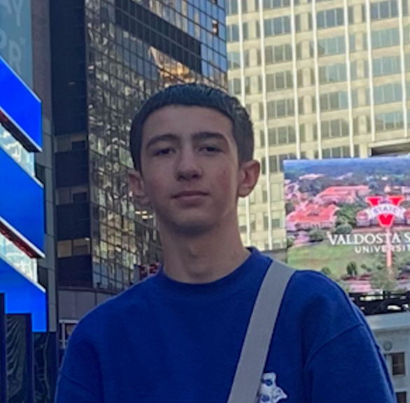
Mon Parcours
2016 - 2020
Brevet des Collèges - Franc-Rosier / Anatole France
2022 - 2024
Baccalauréat Professionnel Metier de l'electricité et des environnements connectés
2024 - 2026
BTS SIO (Services Informatiques aux Organisations) - Option SLAM
Mes Projets

Site web Excursion JAPON
2026Projet de développement d'un site web pour une agence de voyage au Japon
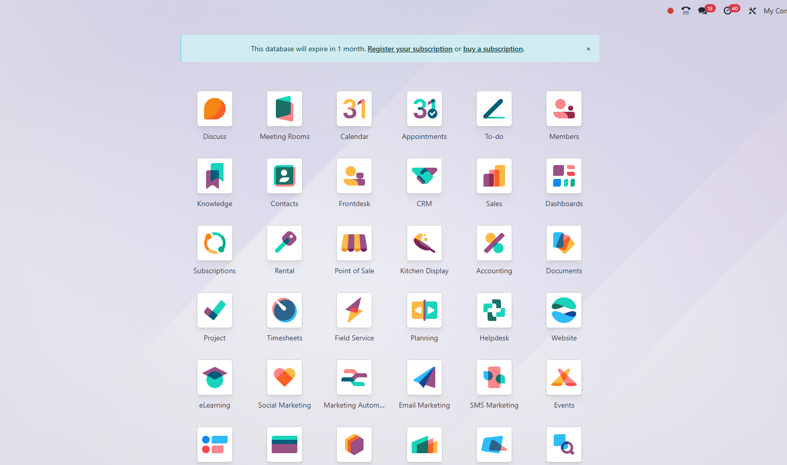
Projet DALIC (Stage 2ème année)
2026Ma participation au projet DALIC durant mon stage en 2ème année dans l'entreprise OpenCime.
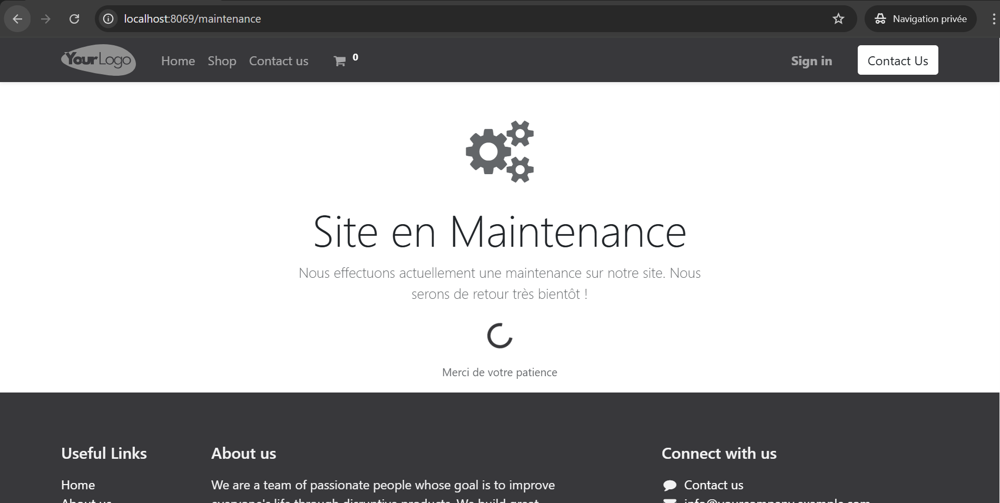
Module de Maintenance
2025Module réaliser en stage sur Odoo
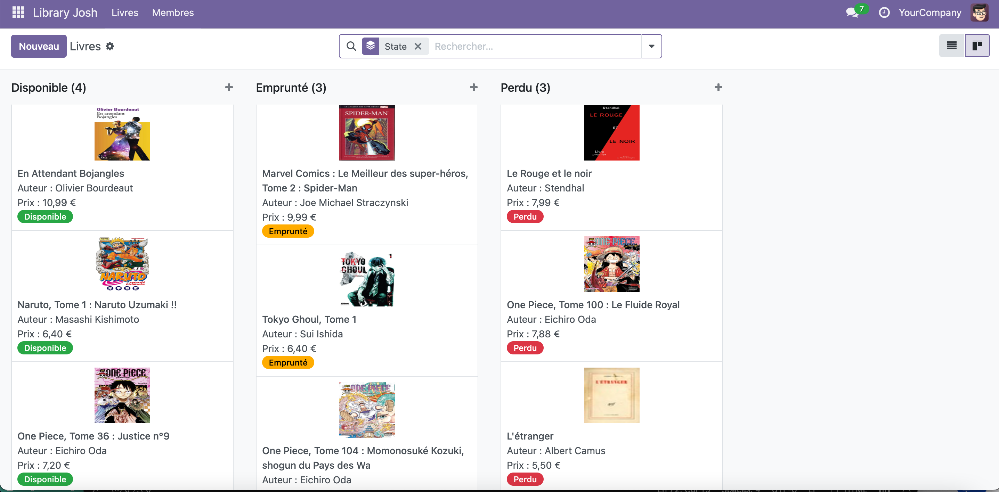
Application de gestion d'une Bibliothèque
2026Application de gestion d'une Bibliothèque réalisée en stage sur Odoo
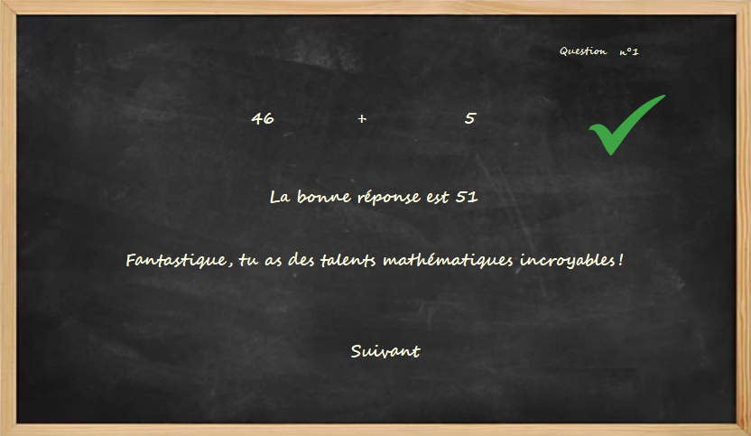
Application de calcul pour enfant
2025Application de calcul pour enfants, ou les enfants peuvent pratiquer leurs compétences mathématiques

Gestionnaire Libre de parc informatique
2025Projet de gestion d'un parc informatique avec GLPI
Site 1er année [EvoJelly]
2024Action Professionnelle en groupe de 4, Création d'une marque de Bonbon qui transforme le consommateur en nounours.
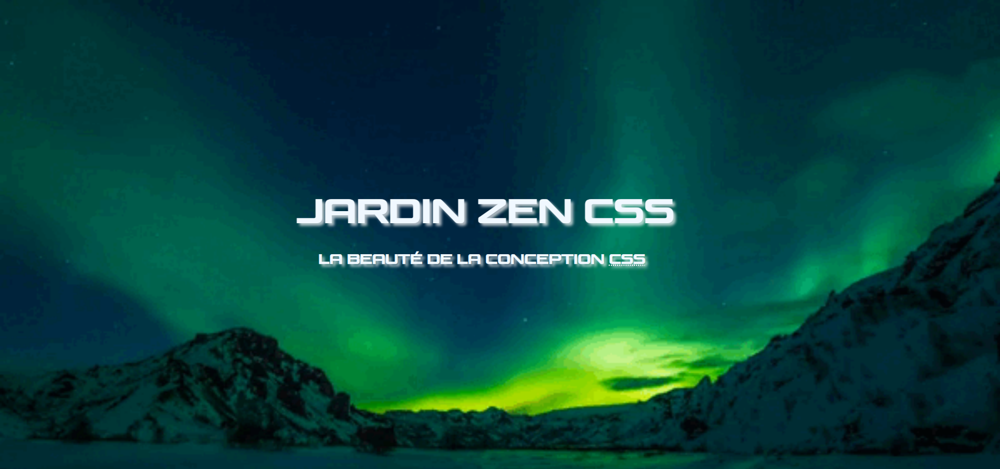
CSS ZenGarden
2024Action Professionnelle individuelle, Modification du CSS d'une page HTML (identique pour tout le monde)
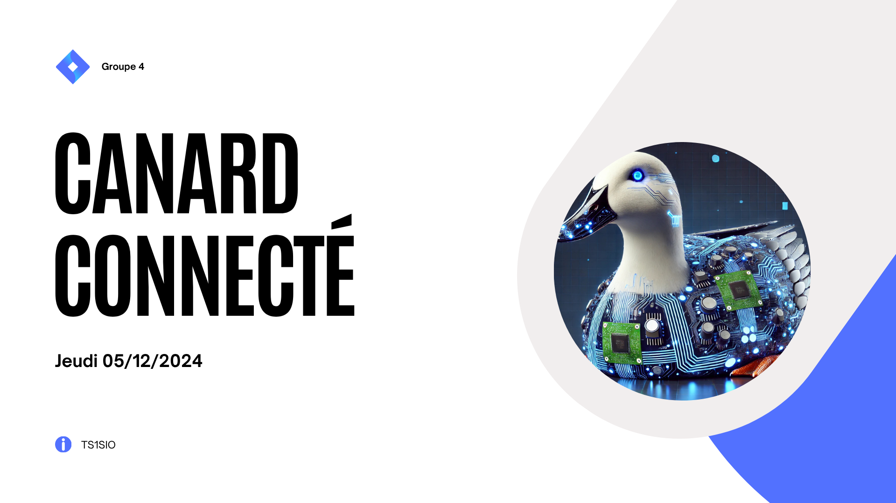
Canard connecté
2024-2025Présentation des actualités récente sur l'informatique
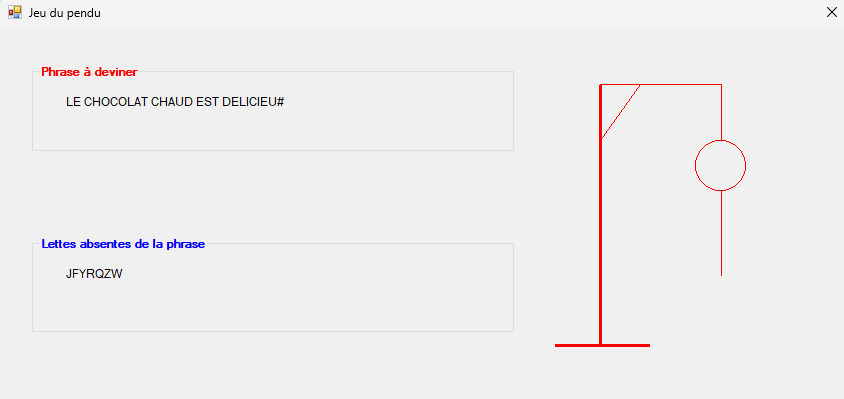
AP Maintenance correctives et/ou évolutives de jeux
2025Présentation des actualités récente sur l'informatique
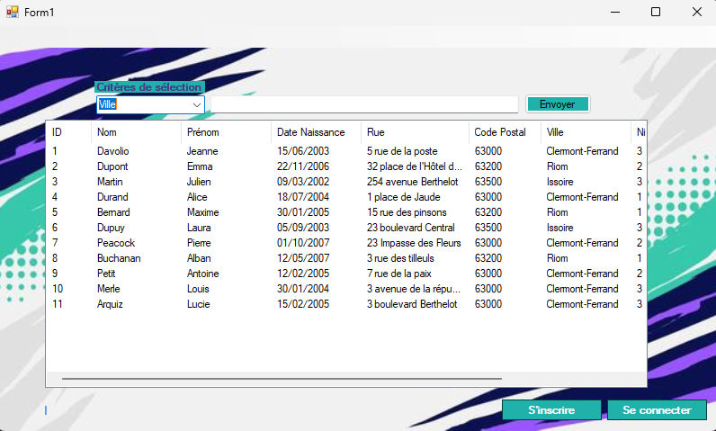
Application - SportsIO
2025Application de gestion des sportifs/sport
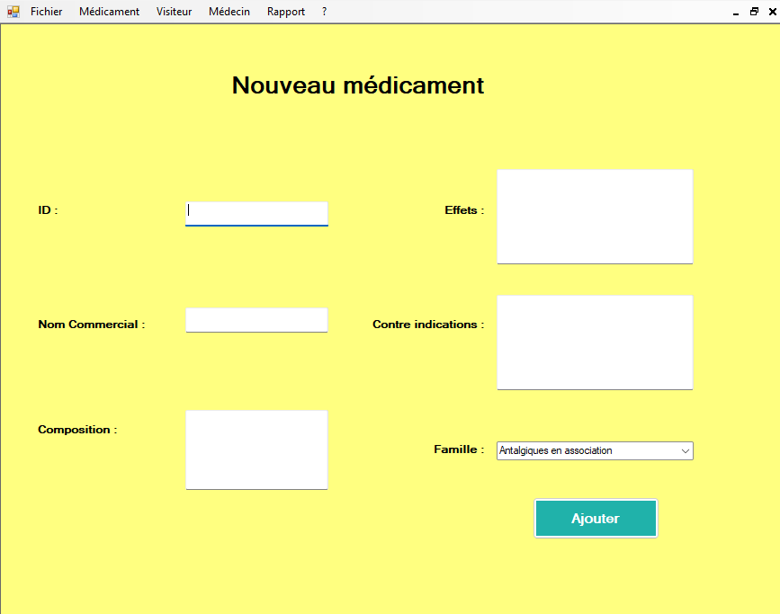
Application - GSB
2025Application de gestion des Medecins/Medicaments/Visiteurs


Module de Maintenance
Contexte
Module développé lors de mon stage chez [OpenCime] ou l'on créer des modules pour les clients, j'ai appris à utiliser odoo, j'ai réaliser le tutoriel odoo, puis on ma demandé créer un module de maintenance.
Objectif
Créer un module qui met en maintenance le site de l'entreprise(client) pour les visiteurs, mais pas pour les administrateurs.
Points réalisés
- Etude de la demande et explication de mon tuteur (fixe un objectif de temps).
- Création du module et du design pour la page de maintenance.
- Présentation du module devant l'entreprise avec support
Difficultés
Réaliser une tache en autonomie n'a pas étais facile, car j'apprenais encore a utiliser odoo et la logique propre au framework.
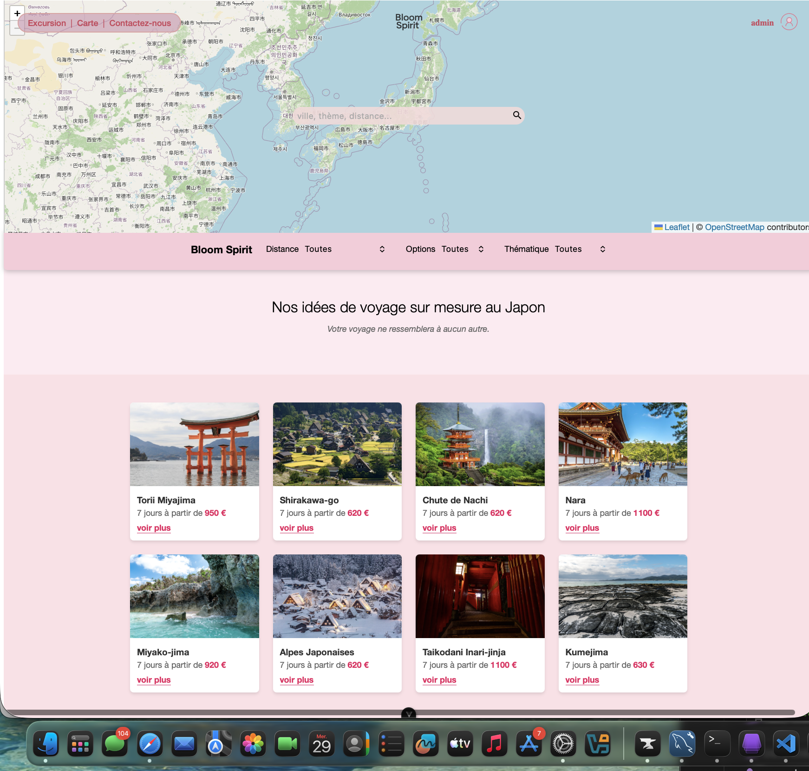
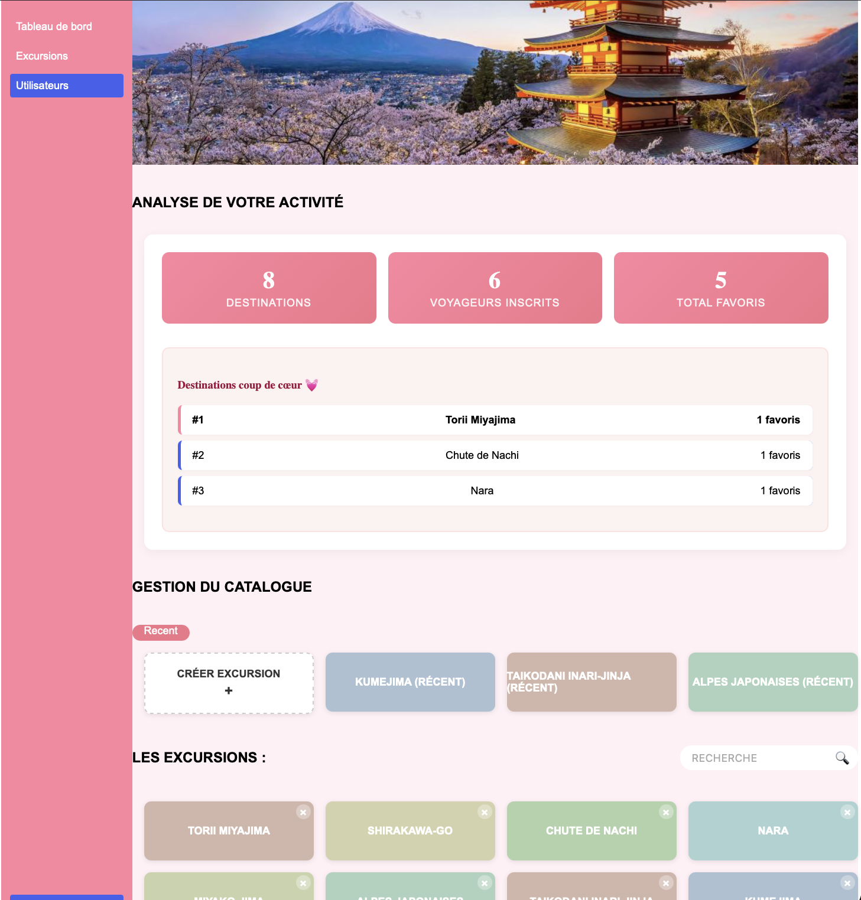
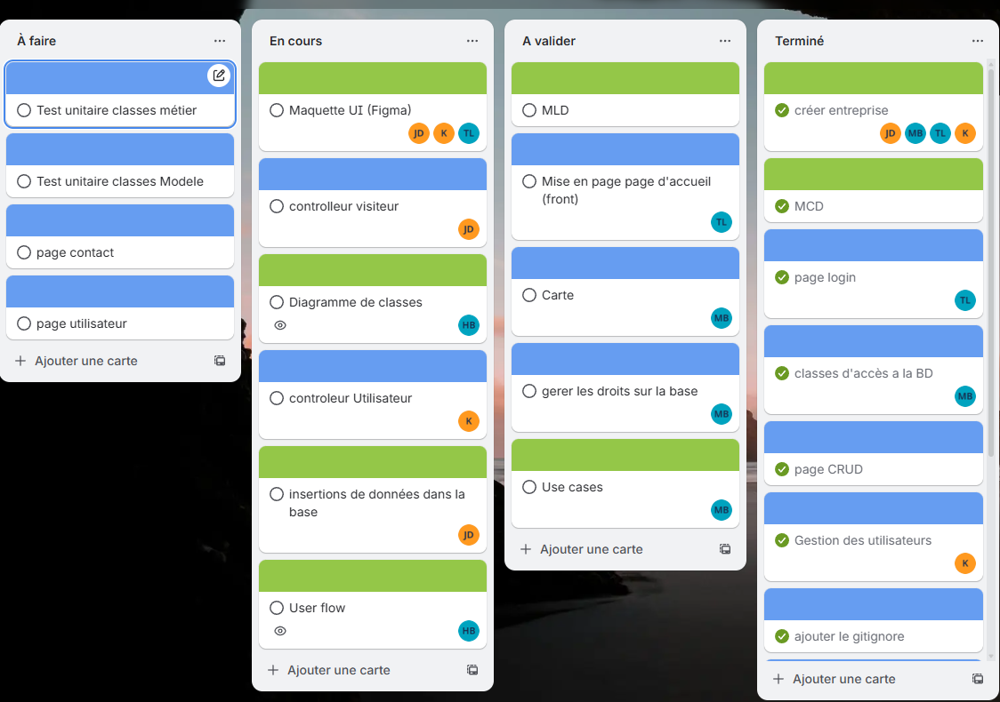
Site web Excursion JAPON
Contexte
Projet réalisé dans le cadre d'une Action Professionnelle, Ou en groupe de 5 nous avons créer une plateforme de réservation d'excursions au Japon en Vue.js/PHP/MySQL. Création d'une base de données, sécurisation des accès et piloté des tâches via Trello et Github en mode projet.
Compétences acquises
- Mettre en place son environnement d'apprentissage personnel
- Analyser les objectifs et les modalités d'organisation d'un projet
- Planifier des activités
- Réaliser les tests d'intégration et d'acceptation d'un service informatique
- Gérer les sauvegardes
- Participer à l'évolution d'un site Web exploitant les données de l'organisation
Points réalisés
- Maquette sur Figma, charte graphique et Organisationsdes taches.
- Création Base de donées, (MCD, MLDR)
- Developpement Back-end/front-end
Difficultés
Gestion du responsive sur mobile et l'organisation a été difficile au vu des absence du groupe.
Gestionnaire Libre de parc informatique
Contexte
Projet de mise en place d'un outil de gestion de parc informatique sur serveur Debian.
Objectif
Inventorier le matériel, gérer les tickets d'incident et suivre les licences logicielles.
Points réalisés
- Installation et configuration de GLPI sur Debian
- Inventaire automatique avec agent FusionInventory
- Gestion des tickets et des utilisateurs
Difficultés
Configuration du serveur Apache et des droits d'accès sous Linux.